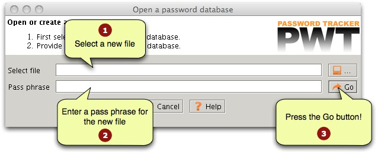
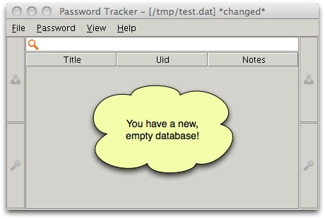
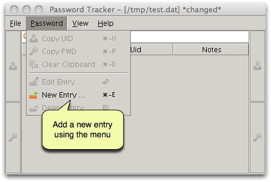
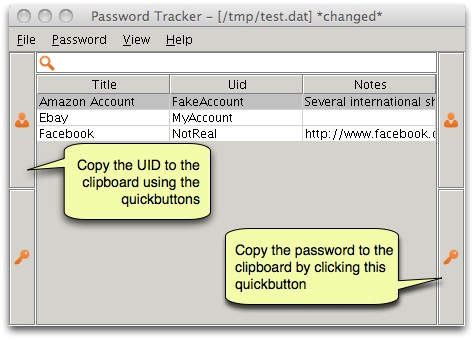

The goal of this page is to get you up-and-running as fast as possible. It assumes you are running the application for the first time. These are the steps to follow if you first start using the application.
When you start the application this screen is shown. In order to create a new safe, you first fill in the path to the file were you want to store your passwords. You can use the browse button to interactively browse through the file system. Then you provide a new pass phrase for the file. Remember the pass phrase very carefully, there is no way to recover your data if you forget the pass phrase. The steps are shown in the screen shot.

The application will ask you if it is OK to create a new database. Press the "Yes" to create your database. The reason that the application asks for confirmation is that you can also use the start screen to open an existing database. If you made a mistake in the pathname, and you do not want to create a new file, you can recover at this point.
The result is the main application window. Since you did not yet enter any data, the screen is almost blank. In the next section we will start entering some data.

Use the menu bar to add a new entry to the database.

As a result, a password editor will be shown where you can enter the data.

You can easily copy the user id or the password by first selecting the entry in the table, and then clicking the quick buttons on the left and right side of the main Password Tracker window.

Finally, remember to save your data before leaving the application. No reason to panic, if your forgot to do so, the application will issue a warning and you can still recover at that point.